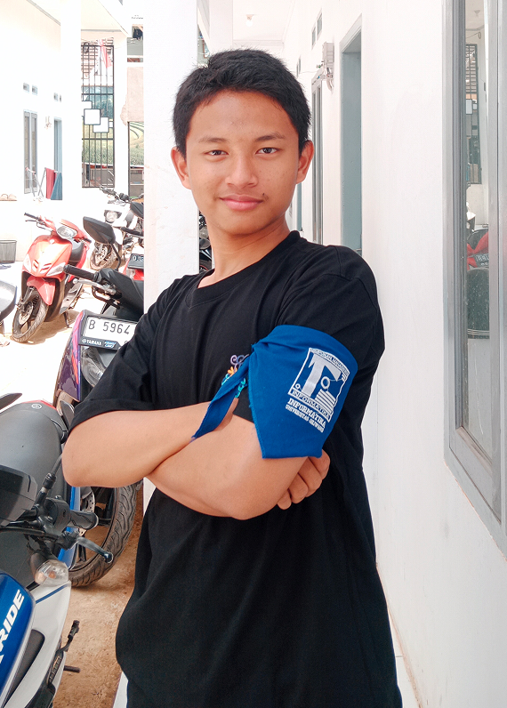
Fardan Fadhilah
Bekasi
267006111065
Kelompok 20 merupakan kelompok yang dibentuk dalam kegiatan PPKM Informatika 2026. Kelompok ini terdiri dari 10 orang mahasiswa yang berasal dari Program Studi Informatika. Dibentuk untuk bekerja sama dalam menjalankan berbagai kegiatan dan tugas selama PPKM, Kelompok 20 mengutamakan kebersamaan, komunikasi, kerja sama, dan tanggung jawab antaranggota.
Dengan beranggotakan 10 orang, Kelompok 20 menjadi wadah bagi setiap anggota untuk saling mengenal, bertukar ide, serta membangun solidaritas sebagai mahasiswa Informatika.
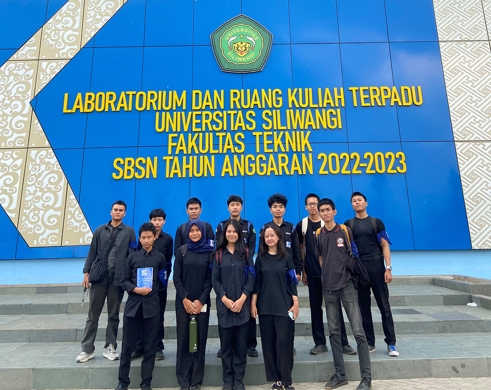
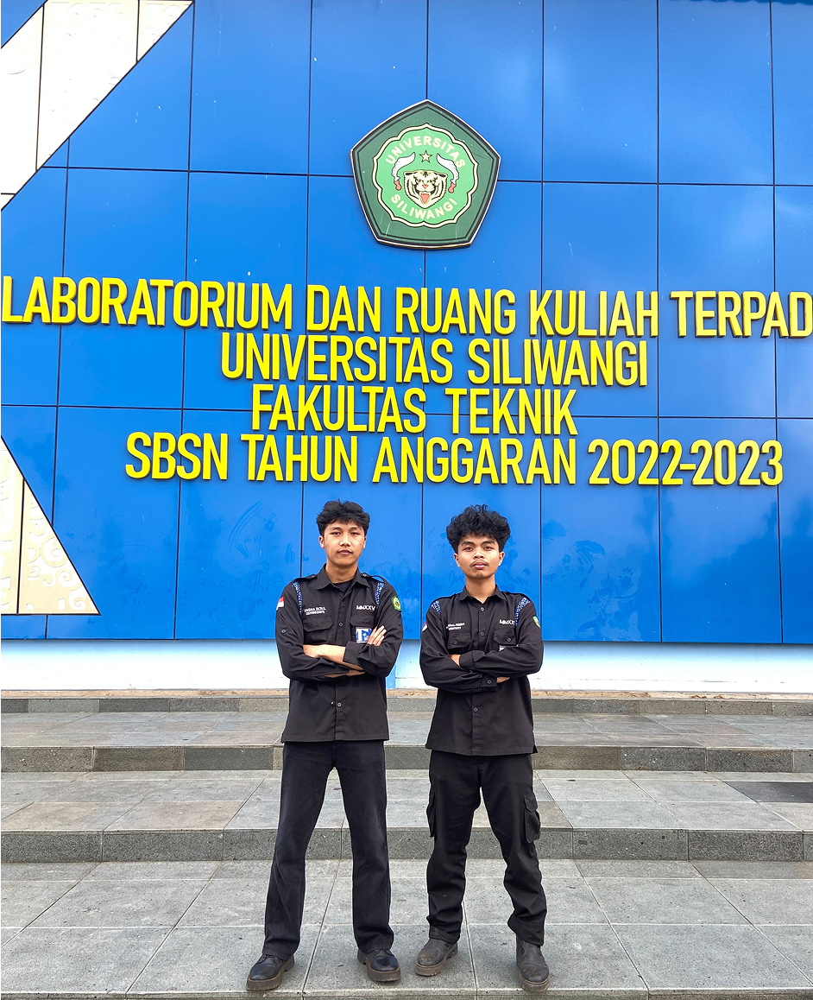

Bekasi
267006111065
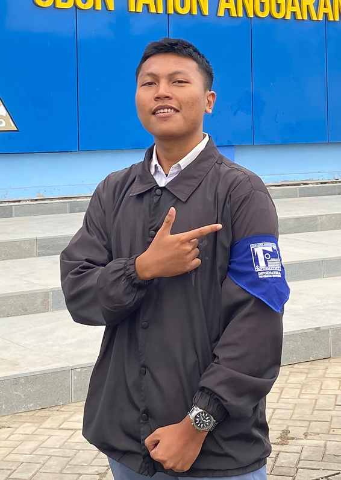
Ciamis
267006111063
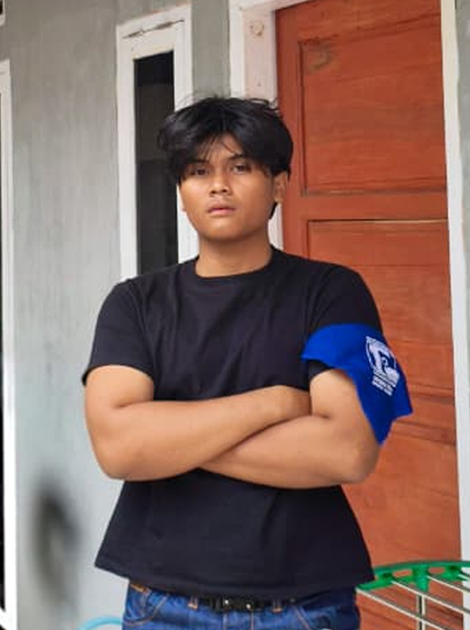
Ciamis
267006111139
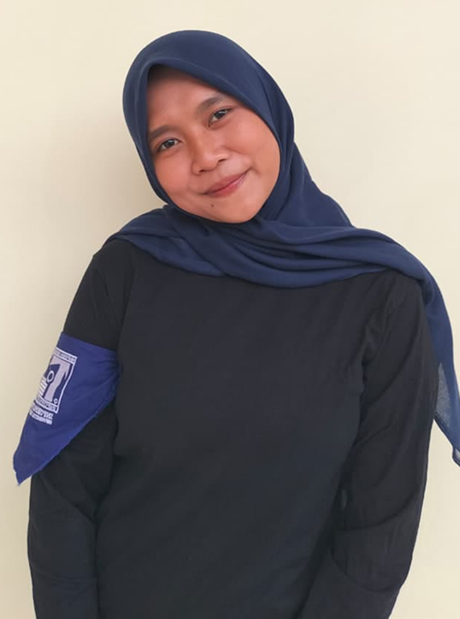
Ciamis
267006111008
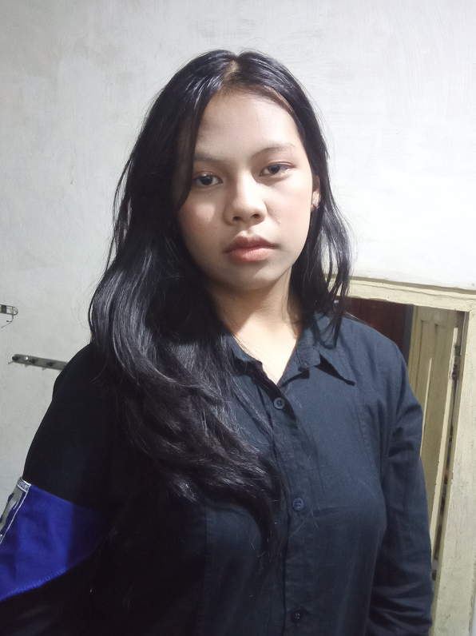
Tasikmalaya
267006111118
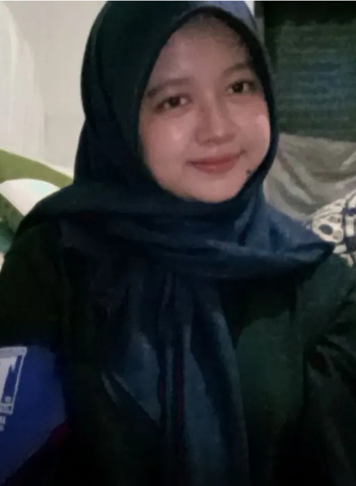
Tasikmalaya
267006111046
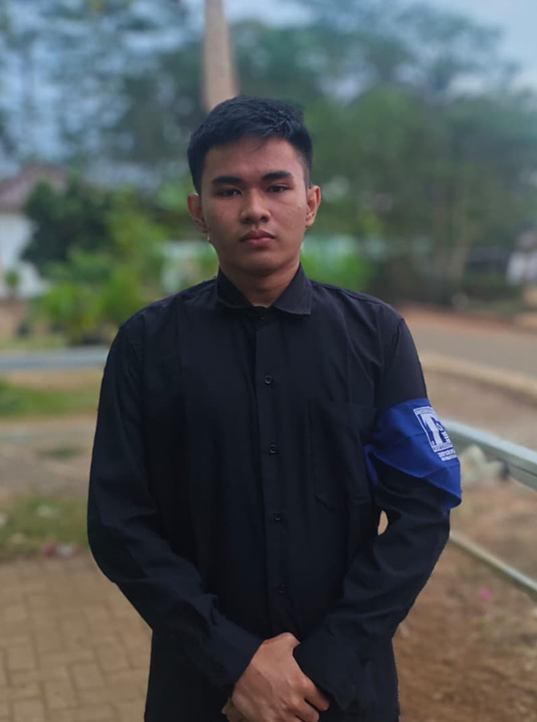
Banjar
267006111213
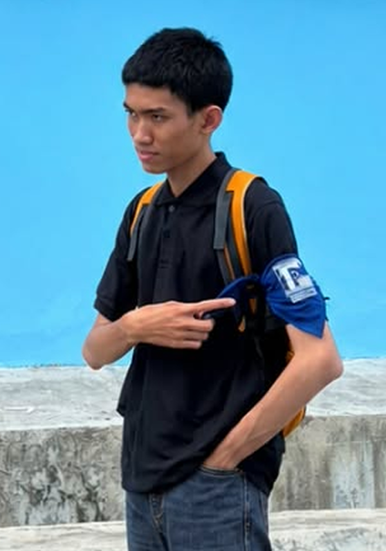
Bogor
267006111215
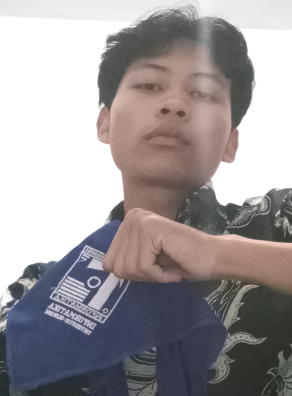
Tasikmalaya
267006111142
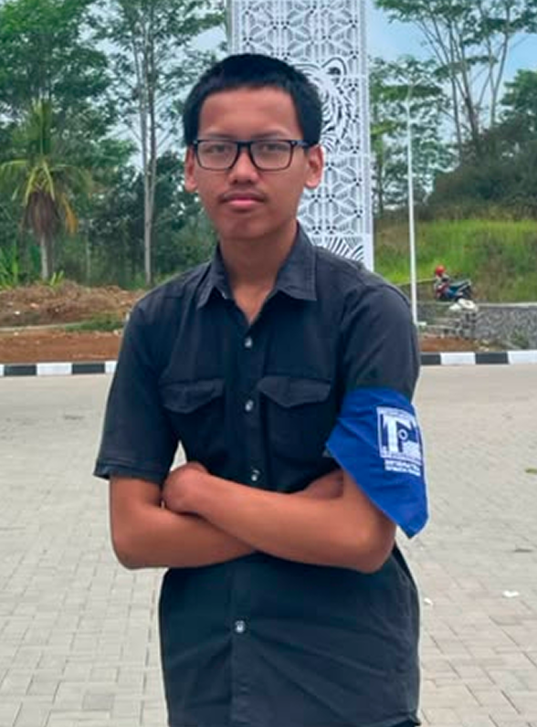
Pangandaran
267006111111